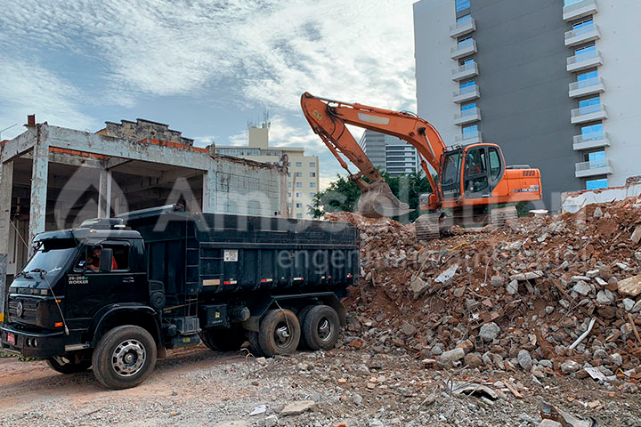

Projetos
Demolição técnica
A Ambsolution elabora um Plano de Desativação de Empreendimento que identifica as características civis e arquitetônicas do local por meio de plantas. Após levantar todas as documentações, é feita uma visita técnica para coletar informações "in loco". Com o objetivo de gerar plantas atualizadas, as instalações da área são inspecionadas.
Com as informações coletadas, é possível estimar a quantidade e qualidade dos resíduos que serão gerados durante a desmobilização da construção. Além disso, é possível identificar quais resíduos demandam cuidados especiais durante a remoção e destinação.